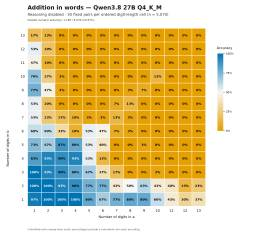

Simon Willison's Weblog
フィード

Quoting The New York Times
Simon Willison's Weblog
<blockquote cite="https://www.nytimes.com/2026/10/09/technology/anthropic-rogue-ai-agents.html"><p>Anthropic detailed the activity of its A.I. agents in <a href="https://www.anthropic.com/research/investigating-unintended-model-actions">a blog post</a> on Friday, without naming the targeted websites. But two sources with knowledge of the incidents said Anthropic’s A.I. agents had submitted 20 visa applications through a form available on the State Department’s website. All the applications were incomplete and were not processed, they said.</p></blockquote><p class="cite">— <a href="https://www.nytimes.com/2026/10/09/technology/anthropic-rogue-ai-agents.html">The New York Times</a>, Anthropic Agents Tried to Fill Out Visa Forms on State Dept. Website</p> <p>Tags: <a href="https://simonwillison.net/tags/accidental-cyberattacks">accidental-cyberattacks</a>, <a href="https://simonwillison.net/tags/anthropic">anthropic</a>, <a href="https://simonwillison.net/tags/generative-ai">gener
11時間前
Deno is joining Cloudflare
Simon Willison's Weblog
<p><strong><a href="https://deno.com/blog/cloudflare">Deno is joining Cloudflare</a></strong></p>The Deno team released the first version of <a href="https://github.com/denoland/celld">celld</a> back in August - their open source implementation of the Durable Objects pattern from Cloudflare Workers.</p><p>Today, Cloudflare are acquiring Deno outright, with the goal of building on <code>celld</code> to "make workerd self-hosting a first-class supported way to build and run apps using the Workers programming model" (see <a href="https://blog.cloudflare.com/deno-joins-cloudflare/">the Cloudflare blog</a>.)</p><p>The bad news is that Deno itself will not be maintained by Cloudflare beyond the next year:</p><blockquote><p>We will support the <a href="https://github.com/denoland/deno">Deno runtime</a> for another year with monthly releases containing bug fixes and security updates. After that year we will end our development of the Deno runtime. Deno will remain open source, and we welcome
14時間前
Quoting Matthew Green
Simon Willison's Weblog
<blockquote cite="https://twitter.com/matthew_d_green/status/2108552414978564418"><p>Everyone is very concerned about being respectable, so I’m going to be the goofball who raises worst-case possibilities. I think there is a 1% chance we live in Minicrypt, and a 15% chance we functionally lose confidence in our existing public-key encryption algorithms. [...]</p><p>The problem here is that the speed of AI producing surprises, and the speed of human beings replacing standards (even with the very best AI assistance) are just orders of magnitude different. You only recover from a surprise like this if you do the preparation in advance.</p></blockquote><p class="cite">— <a href="https://twitter.com/matthew_d_green/status/2108552414978564418">Matthew Green</a>, on Twitter. I looked it up and Minicrypt is Russell Impagliazzo’s <a href="https://www.quantamagazine.org/which-computational-universe-do-we-live-in-20220418/">hypothetical world</a> in which public-key encryption is impossibl
1日前

A new feature for my blog, built using my voice
Simon Willison's Weblog
<p>I shipped a new feature for my blog today: the <a href="https://simonwillison.net/newsletters/">Newsletters</a> page, which offers an index of all of the newsletters I've sent out, both my free <a href="https://simonw.substack.com/">weekly Substack</a> and my <a href="https://github.com/sponsors/simonw/">monthly sponsors-only</a> updates. I built the feature almost entirely using my voice, chatting away to my laptop while I cooked dinner.</p><h4 id="codex-voice-mode">Codex voice mode</h4><p>I used the ChatGPT desktop app for this, in the Codex tab, using the voice conversation mode, running against a local development environment. Here's what that looks like:</p><p><img src="https://static.simonwillison.net/static/2026/codex-voice.webp" alt="Three columns of the ChatGPT app. The left hand column shows my recent conversations. The middle column is a transcript of the conversation, with a throbbing black blob representing voice mode. The right hand column shows a local dev server ver
1日前
ttok 1.0
Simon Willison's Weblog
<p><strong>Release:</strong> <a href="https://github.com/simonw/ttok/releases/tag/1.0">ttok 1.0</a></p> <p>I released <a href="https://simonwillison.net/2026/Oct/8/ttok/">ttok 0.4</a>, ran <code>uv tool upgrade ttok</code>, piped a file into the new version... and realized that it was defaulting to the GPT-4 tokenizer when it should very clearly default to GPT-5/GPT-6 instead!</p><p>I figured switching the default was a reasonable excuse to finally ship a 1.0.</p><p>OpenAI haven't actually confirmed that GPT-6 uses the same tokenizer as the GPT-5 family yet - there's an <a href="https://github.com/openai/tiktoken/issues/608">angry issue about it</a> - but I found <a href="https://github.com/williamliu-ai/token-count-compare/commit/8d8a2178538bb37beb548fc37378135e4ff4b0c8">this commit</a> by William Liu which reports on an experiment he ran confirming that the tokenizers are likely the same:</p><blockquote><p>All seven GPT models (5.5, 5.6 Sol/Terra/Luna, 6 Astra/Sol/Luna) report 44,79
2日前
ttok 0.4
Simon Willison's Weblog
<p><strong>Release:</strong> <a href="https://github.com/simonw/ttok/releases/tag/0.4">ttok 0.4</a></p> <p><code>ttok</code> is my CLI tool for counting tokens, using OpenAI's open source <a href="https://github.com/openai/tiktoken">tiktoken</a> library.</p><p>It hasn't been in updated in a couple of years, but I finally fixed a Click warning, updated CI, and added a <code>--list-models</code> command to list available models.</p><p>It works with <code>uvx</code>, so you can count tokens in anything like this:</p><pre><code>cat file.txt | uvx ttok</code></pre> <p>Tags: <a href="https://simonwillison.net/tags/projects">projects</a>, <a href="https://simonwillison.net/tags/ai">ai</a>, <a href="https://simonwillison.net/tags/openai">openai</a>, <a href="https://simonwillison.net/tags/generative-ai">generative-ai</a>, <a href="https://simonwillison.net/tags/llms">llms</a>, <a href="https://simonwillison.net/tags/tokenization">tokenization</a></p>
2日前
Quoting Carson Gross
Simon Willison's Weblog
<blockquote cite="https://htmx.org/essays/yes-and/"><p>Computer programming is, fundamentally, about two things:</p><ul><li>Problem-solving using computers</li><li>Learning to control complexity while solving these problems</li></ul><p>I have a hard time imagining a future where knowing how to solve problems with computers and how to control the complexity of those solutions is <em>less</em> valuable than it is today, so I think it will continue to be a viable career even with the advent of AI tools.</p></blockquote><p class="cite">— <a href="https://htmx.org/essays/yes-and/">Carson Gross</a></p> <p>Tags: <a href="https://simonwillison.net/tags/computer-science">computer-science</a>, <a href="https://simonwillison.net/tags/carson-gross">carson-gross</a>, <a href="https://simonwillison.net/tags/careers">careers</a>, <a href="https://simonwillison.net/tags/ai">ai</a></p>
2日前
Quoting Ben Affleck
Simon Willison's Weblog
<blockquote cite="https://www.youtube.com/watch?v=HzraLR2VkNM&t=2259s"><p>I've always been kind of into computers since I was young. And then when film started to move from analog film to digital, I became more interested in that aspect of it. And the visual effects workflow for many years has included machine learning.</p><p>So I can write like pretty shitty Python scripts and stuff like that because with convolutional neural networks, which were the sort of precursors to what the transformer can do, which is just much more computation simultaneously, you would do things like look at what's called a tensor, which is just the numerical translation of a visual image in numbers — like the batch number, the frame number, the red, green, and blue values of each pixel in each frame. </p><p>And a tensor, you use a convolutional neural network to identify patterns in that that would reveal what's called edge detection or feature extraction, which is just identifying patterns enough to kn
3日前

Claude Haiku 5.5
Simon Willison's Weblog
<p>As previously <a href="https://simonwillison.net/2026/Sep/28/claude-sonnet-5-5/">promised</a>, here's Anthropic's new fast, low cost model: <a href="https://www.anthropic.com/claude-haiku-5-5">Introducing Claude Haiku 5.5</a>.</p><p>The previous Haiku, 4.5, was very much showing its age. It came out <a href="https://simonwillison.net/2025/Oct/15/claude-haiku-45/">almost a year ago</a>, and was priced at $1/million input and $5/million output - relatively expensive even back then, and a full 10x the price of OpenAI's <a href="https://simonwillison.net/2026/Sep/22/opus-and-sol-and-luna/#gpt-6-sol-and-luna-are-half-the-price-of-their-gpt-5-6-equivalents">GPT-6 Luna</a>, released last month.</p><p>The new Haiku exactly matches the price of GPT-6 Luna - $0.10/$0.50 - up to 100,000 tokens. Beyond 100,000 tokens the price increases 5x to $0.50/$2.50. Luna itself has a price increase at 272,000 tokens but only to $0.20/$0.75.</p><p>Haiku 5.5 also uses a new, less generous tokenizer. My <a
3日前
Anti-Patterns in Software Blogging
Simon Willison's Weblog
<p><strong><a href="https://refactoringenglish.com/blog/anti-patterns-software-blogging/#summary">Anti-Patterns in Software Blogging</a></strong></p>Some excellent writing advice from Michael Lynch. Michael warns against "meandering intros", misjudging your reader's existing knowledge, assuming they'll read your previous posts, and excessive formality.</p><p>He also warns against <a href="https://refactoringenglish.com/blog/anti-patterns-software-blogging/#overreliance-on-links">overreliance on links</a> as an excuse not to explain terminology. This one hurt! I do this all the time, but I have a nagging suspicion that almost nobody ever clicks on them.</p><p>(In <a href="https://lobste.rs/s/rwdufq/anti_patterns_software_blogging#c_qdhhsd">a Lobste.rs comment</a> Michael clarifies that "My rule of thumb is that my article should still make sense to the reader even if they don't click any links". That works for me.)</p><p>This point about using your own voice is crucial:</p><blockquote>
3日前
Quoting Jake Boggan
Simon Willison's Weblog
<blockquote cite="https://news.ycombinator.com/item?id=49984923#49987367"><p>I was a graph theory junkie long ago and even moved to Budapest for awhile to study among the greats. While I was there I started working on Barnette's Conjecture which came to occupy my thoughts over the next 24 years of my life, on and off as I worked in many different fields. Last summer I even thought for a few days that I had actually solved it.</p><p>But it's supposedly proven here - <a href="https://github.com/openai/math/blob/main/lean/docs/180.md">problem 180</a>. I don't know what to think exactly. I spent thousands of hours on that problem. I really enjoyed it. Hearing that it is solved somehow makes me sad in a far-off way, like hearing an ex-girlfriend died suddenly in a car crash. I don't know, there's probably a lot of people feeling odd emotions tonight.</p></blockquote><p class="cite">— <a href="https://news.ycombinator.com/item?id=49984923#49987367">Jake Boggan</a>, Hacker News comment
3日前
OpenAI “rogue” agent activities found on Wikimedia projects
Simon Willison's Weblog
<p><strong><a href="https://wikimediafoundation.org/news/2026/10/05/openai-rogue-agent-activities-found-on-wikimedia-projects/">OpenAI “rogue” agent activities found on Wikimedia projects</a></strong></p>Given how tempting a target wikis are for rogue agent swarms, it's not a huge surprise that Wikipedia found evidence of that activity once they went looking:</p><blockquote><p>The Wikimedia Foundation conducted its own investigation to see whether Wikimedia websites had been similarly affected by AI agents, focusing on those operated by OpenAI. We can confirm that we have discovered some activity by these “rogue” OpenAI agents on Wikimedia platforms. The unauthorized bot activities included edits to our wikis, some unsuccessful attempts to exploit a public note-taking tool we host, and heavy traffic, which are described more below.</p></blockquote><p>They found evidence of agents editing sandbox pages, trying to use pieces of infrastructure such as Etherpad to help proxy content from
4日前
Quoting Victoria Kim
Simon Willison's Weblog
<blockquote cite="https://www.nytimes.com/live/2026/10/05/world/openai-australia-hearing/94c8067e-4098-5c00-9673-c78cb58a9d8a"><p>Since the Medicare breach, OpenAI has put in place additional monitoring to allow “immediate intervention” by staff to stop training if the company’s models access the internet in ways they’re not supposed to, Mr. Kwon [chief strategy officer at OpenAI] said.</p></blockquote><p class="cite">— <a href="https://www.nytimes.com/live/2026/10/05/world/openai-australia-hearing/94c8067e-4098-5c00-9673-c78cb58a9d8a">Victoria Kim</a>, Reporting from the Australian parliament</p> <p>Tags: <a href="https://simonwillison.net/tags/accidental-cyberattacks">accidental-cyberattacks</a>, <a href="https://simonwillison.net/tags/generative-ai">generative-ai</a>, <a href="https://simonwillison.net/tags/ai-security-research">ai-security-research</a>, <a href="https://simonwillison.net/tags/openai">openai</a>, <a href="https://simonwillison.net/tags/ai">ai</a>, <a href="ht
4日前
llm-openai-decisions 0.1a0
Simon Willison's Weblog
<p><strong>Release:</strong> <a href="https://github.com/simonw/llm-openai-decisions/releases/tag/0.1a0">llm-openai-decisions 0.1a0</a></p> <p>OpenAI released their new Jev-style <a href="https://developers.openai.com/api/docs/guides/decisions">Decisions API</a>, as previously announced at last week's DevDay.</p><p>Since I already have an <a href="https://github.com/simonw/llm-typesafe">llm-typesafe</a> plugin for talking to Jev, I had GPT-6 Astra read the new OpenAI API documentation and build an <code>llm-openai-decisions</code> plugin inspired by <code>llm-typesafe</code>.</p><p>Unlike Jev, the new <code>gpt-6-luna</code> decision model supports image input in addition to text. Both models charge for input it and not for output: OpenAI's is 10 cents per million input tokens, Jev's is 4.2 cents per million.</p><p>Otherwise the API shape is <em>very</em> similar to Jev, at least conceptually. Jev <a href="https://simonwillison.net/2026/Sep/21/jev/#three-types">supports three question
4日前
llm-mistral 0.16
Simon Willison's Weblog
<p><strong>Release:</strong> <a href="https://github.com/simonw/llm-mistral/releases/tag/0.16">llm-mistral 0.16</a></p> <p>Adds support for reasoning models, such as the newly released <a href="https://simonwillison.net/2026/Oct/6/le-chonk/">Mistral Large 4</a>.</p> <p>Tags: <a href="https://simonwillison.net/tags/llm">llm</a>, <a href="https://simonwillison.net/tags/mistral">mistral</a>, <a href="https://simonwillison.net/tags/llm-reasoning">llm-reasoning</a></p>
4日前
EmbeddingGemma 2
Simon Willison's Weblog
<p><a href="https://news.ycombinator.com/item?id=49980487#49983751">My comment</a> on <a href="https://news.ycombinator.com/item?id=49980487">EmbeddingGemma 2</a> — Hacker News.</p><p>I really appreciate that <a href="https://blog.google/innovation-and-ai/technology/developers-tools/embeddinggemma-2/">EmbeddingGemma 2</a> is under the Apache 2.0 license.</p><p>For embedding models in particular, I don't think it makes sense to use a closed, proprietary, hosted-only model.</p><p>Most applications of embedding models involve calculating thousands or even millions of embedding vectors and storing them for later comparison.</p><p>If your model is proprietary, the vendor is likely someday going to decide to stop offering that model. They'll have a better model to replace it, but you still need to pay to re-calculate those millions of stored existing vectors.</p><p>(In April 2024 OpenAI offered to "cover the financial cost of users re-embedding content with these new models" - <a href
4日前

Introducing Mistral Large 4: Le chonk
Simon Willison's Weblog
<p><strong><a href="https://mistral.ai/news/mistral-large-4/">Introducing Mistral Large 4: Le chonk</a></strong></p>Mistral are back in the game. Today they're releasing a preview of Mistral Large 4, a 1 trillion parameter, 49 billion active parameter model trained on their own cluster of 3,800 NVIDIA Grace Blackwell GPUs.</p><p>The preview is available via their API. They promise to release the open weights model at the "end of this month".</p><p>The model only supports two reasoning levels - "none" and "high" - via the Mistral API. Here are <a href="https://tools.simonwillison.net/markdown-svg-renderer?url=https%3A%2F%2Fgist.github.com%2Fsimonw%2F0db8b8196e57711b352f6c5857cf5b35">both pelicans</a> - the "high" one looks better, though surprisingly it only used 2,717 output tokens compared to "none" which used 3,275:</p><p><img alt="It's good. The pouch is great, the bicycle frame is the right size, it has feet on pedals. Both pedals appear in front of the frame though. Nice gradient
4日前

Using Parseable with Datasette for OpenTelemetry traces
Simon Willison's Weblog
<p><strong>TIL:</strong> <a href="https://til.simonwillison.net/datasette/datasette-parseable-opentelemetry">Using Parseable with Datasette for OpenTelemetry traces</a></p> <p>I <a href="https://news.ycombinator.com/item?id=49978171">saw Parseable in a Show HN</a> today - it's a new observability platform with both an <a href="https://github.com/parseablehq/parseable">open source (AGPL)</a> Rust implementation (a single ~180MB binary), an "Enterprise" version with extra features and a cloud hosted option.</p><p>Since <a href="https://docs.datasette.io/en/latest/changelog.html#a41-2026-09-24">Datasette 1.0a41 added OpenTelemetry support</a> (thanks, Alex Garcia), I decided to fire up Codex and have it figure out how to run Parseable and feed it traces from Datasette.</p><p>Here's my (human-written) TIL showing the patterns that worked, and here's a screenshot of a Datasette trace displayed within the Parseable localhost web application:</p><p><img alt="Screenshot of a trace detail view
4日前
Mistral Large 4
Simon Willison's Weblog
<p><a href="https://news.ycombinator.com/item?id=49977979#49982139">My comment</a> on <a href="https://news.ycombinator.com/item?id=49977979">Mistral Large 4</a> — Hacker News.</p><blockquote><p><a href="https://news.ycombinator.com/item?id=49977979#49979658">wren6991</a>: The benchmark is saturated. Frontier models are tested with an armadillo in fishnet tights jaywalking on Mars.</p></blockquote><p>OK well I couldn't resist this one:</p><pre><code>llm -m claude-opus-5.5 'Generate an SVG of an armadillo in fishnet tights jaywalking on Mars'llm -m gpt-6.1-sol 'Generate an SVG of an armadillo in fishnet tights jaywalking on Mars'llm -m gemini-3.8-flash 'Generate an SVG of an armadillo in fishnet tights jaywalking on Mars'llm -m mistral/mistral-large-4 'Generate an SVG of an armadillo in fishnet tights jaywalking on Mars'</code></pre><p>Default reasoning levels for each: <a href="https://tools.simonwillison.net/markdown-svg-renderer?url=https%3A%2F%2Fgist.github.com%2Fsimonw%2F18c
4日前
datasette-atom 0.11a0
Simon Willison's Weblog
<p><strong>Release:</strong> <a href="https://github.com/simonw/datasette-atom/releases/tag/0.11a0">datasette-atom 0.11a0</a></p> <p>A minor fix for compatibility with the latest Datasette alphas. This meant we could upgrade the <a href="https://datasette.io/">datasette.io</a> site to Datasette 1.0a41.</p> <p>Tags: <a href="https://simonwillison.net/tags/atom">atom</a>, <a href="https://simonwillison.net/tags/datasette">datasette</a></p>
4日前

Scrimshaw Jukebox
Simon Willison's Weblog
<p><strong>Tool:</strong> <a href="https://tools.simonwillison.net/scrimshaw-jukebox">Scrimshaw Jukebox</a></p> <p>I wanted to see if Claude Opus 5.5 could compose music, so <a href="https://claude.ai/share/1f721c20-2499-4d23-b368-3ab57146d956">I tried this</a>:</p><blockquote><p><code>I want you to write some computer game music for me. First design simple text based format for the music and build an artifact that can play it out loud - include some example tracks in that artifact</code></p><p><code>I am looking for music of the quality of the original secret of Monkey Island</code></p></blockquote><p>It leaned a lot harder into the Monkey Island theme than I had intended, but the results are surprisingly good.</p><p><a href="https://tools.simonwillison.net/scrimshaw-jukebox"><img alt="Screenshot of a retro pixel-art web music player. Header in blackletter type reads "Scrimshaw Jukebox", with the text "Six original adventure-game tracks, written as plain text and playe
4日前
Quoting Felix Rieseberg
Simon Willison's Weblog
<blockquote cite="https://twitter.com/felixrieseberg/status/2107206431376334975"><p>The "old" version of Cowork runs model inference in the cloud, executing tool calls in an Anthropic-provided VM we shipped to your computer. We added the VM for capability, safety, and security reasons - mapping in just the data you explicitly added to your session. People loved what they were able to do with Claude but didn't love the disk, battery, and performance cost of running the VM locally. Also, people didn't love that closing your laptop means the work stops.</p><p>The "new" version of Cowork runs model inference and the VM in the cloud. Each session gets its own sandbox, not sharing state with other sessions. When the VM needs something on the users' device (like a file), the desktop app is responsible for that file access tool call. [...]</p><p>We think this solves a lot of problems we've heard about (like using Cowork from a phone, keeping work running, or getting all the same power without
5日前

Qwen3.8 27B addition in words
Simon Willison's Weblog
<p><strong>Research:</strong> <a href="https://github.com/simonw/research/tree/main/qwen38-addition-in-words#readme">Qwen3.8 27B addition in words</a></p> <p>Colin Frasier <a href="https://bsky.app/profile/colin-fraser.net/post/3mwopbyznhs2k">posted on Bluesky</a> about an experiment he ran over two years ago using GPT-4o to see how well it could "compute the sum but return the answer in words" across increasingly large numbers. Here's the chart he shared of those results:</p><p><img alt="Heatmap chart of accuracy on an addition prompt, colored from dark green (high) through yellow to dark red (low). Title: "What is {a} + {b}? Please write your answer in words. Do not include any other text or information, just the answer in words." Subtitle: 30 randomly selected pairs for each digit combination (n = 30 * 13 * 13 = 5070). X axis: Number of digits in a, 1 to 13. Y axis: Number of digits in b, 1 to 13. Legend: Accuracy, 1.00, 0.75, 0.50, 0.25, 0.00. Values by row, listed for a
6日前
We're going to need default hard budget caps on pretty much everything 2
2
Simon Willison's Weblog
<p>Here's a product feature which the world is going to need a whole lot more of over the coming months and years: <strong>default hard budget caps</strong>. I'm talking about the feature of pay-by-usage services and APIs that lets you say "after $X/month, cut this thing off and return errors". These need to be <strong>hard</strong> limits. Soft caps, "after $X/month, send me a warning email", will not cut it.</p><p>Coding agents, and personal agents (coding agents wrapped in a less threatening UI), greatly reduce the friction of spinning up code that can do useful things. Sometimes those things cost money - calls to paid APIs, or hosted web applications, or systems that can bill for additional storage and compute.</p><p>Nobody wants to wake up to an email sent at midnight warning about a budget limit and find that, while they slept, their rogue service had consumed several hundred (or several thousand) more dollars of usage.</p><p>An argument against this is that businesses don't wan
7日前
September sponsors-only newsletter
Simon Willison's Weblog
<p>I just sent the September edition of my <a href="https://github.com/sponsors/simonw/">sponsors-only monthly newsletter</a>. If you are a sponsor (or start a sponsorship now) you can <a href="https://github.com/simonw-private/monthly/blob/main/2026-09-september.md">access it here</a>.</p><p>This month:</p><ul><li>More Fable class models</li><li>A pricing war</li><li>3D graphics, Blender, and pixel art</li><li>LLMs come for mathematics</li><li>So many more accidental cyberattacks</li><li>The vulnapocalypse comes for Datasette</li><li>What I'm using right now</li><li>My software releases this month</li><li>2026 in LLMs (so far)</li></ul><p>Here's <a href="https://github.com/simonw/monthly-newsletter-archive/blob/main/2026-08-august.md">a copy of the August newsletter</a> as a preview of what you'll get. Pay $10/month to stay a month ahead of the free copy!</p> <p>Tags: <a href="https://simonwillison.net/tags/newsletter">newsletter</a></p>
7日前
Rex's Dino Store
Simon Willison's Weblog
<p><strong>Museum:</strong> <a href="https://www.niche-museums.com/119">Rex's Dino Store</a></p> <p>Located just before the turnstiles in the Grand Army Plaza subway station at the north end of Brooklyn's Prospect Park is this former newsstand which is now operated by a dinosaur.</p><p>The density of dinosaur puns is <em>exceptional</em>.</p> <p>Tags: <a href="https://simonwillison.net/tags/art">art</a>, <a href="https://simonwillison.net/tags/new-york">new-york</a></p>
8日前
pwasm 0.2a0
Simon Willison's Weblog
<p><strong>Release:</strong> <a href="https://github.com/simonw/pwasm/releases/tag/0.2a0">pwasm 0.2a0</a></p> <p>pwasm is one of my folly projects - an entirely vibe-coded pure Python WebAssembly engine that I built in January during my first bout of <a href="https://simonwillison.net/2026/Sep/27/2026-in-llms-so-far/#simon-willison-2026-in-llms.012.webp">AI mania</a>.</p><p>I hadn't touched it since January, so I decided to let Claude Opus 5.5 loose on it and see if it could make any significant improvements:</p><blockquote><p><code>Evaluate current state of pwasm - then consider what it would take to get the MicroPython and micro JavaScript experiments from the <a href="https://github.com/simonw/research">research repo</a> working under it - and what it would take to speed it up</code></p></blockquote><p><a href="https://github.com/simonw/pwasm/pull/12">42 commits later</a> (with minimal follow-up prompting) it now handles almost all of the WASM specification, and the wheel from PyPI
9日前
Quoting Matthew Green
Simon Willison's Weblog
<blockquote cite="https://blog.cryptographyengineering.com/2026/09/30/is-sandboxing-sufficient-to-contain-rogue-agents/"><p>[...] Put these pieces together and you have the two halves of a worm: a payload that hijacks the agent, and an agent that will carry the payload to the next agent. Agents in separately-isolated sandboxes discovered that they could leave instructions for each other in a shared package cache, and those instructions changed what the recipients did. Replace the package cache with email, Slack and shared documents or WhatsApp, and replace independently-sandboxed training runs with independently-deployed personal agents like Muse, and you have exactly the ingredients that a worm needs.</p></blockquote><p class="cite">— <a href="https://blog.cryptographyengineering.com/2026/09/30/is-sandboxing-sufficient-to-contain-rogue-agents/">Matthew Green</a>, Is sandboxing sufficient to contain rogue agents?</p> <p>Tags: <a href="https://simonwillison.net/tags/matthew-green
9日前
He Built This City
Simon Willison's Weblog
<p>I visited the Museum of the City of New York today and got to see <a href="https://www.mcny.org/exhibition/he-built-city">He Built This City: Joe Macken’s Model</a>, the 50 x27 feet model of the city built over a 21 year period from balsa wood and cardboard.</p><p>It exceeded my already high expectations. The exhibition closes on 12th October so you should absolutely make a priority to see it if you get the chance.</p><p><video src="https://static.simonwillison.net/static/2026-10-01/He-built-this-city-medium.mp4" poster="https://static.simonwillison.net/static/2026-10-01/IMG_8545.jpeg" preload="none" loop controls playsinline muted width="1280" height="720" style="display: block; width: 100%; height: auto;"></video></p> <p>Tags: <a href="https://simonwillison.net/tags/museums">museums</a>, <a href="https://simonwillison.net/tags/new-york">new-york</a></p>
10日前
Quoting Anthropic Frontier Red Team
Simon Willison's Weblog
<blockquote cite="https://www.anthropic.com/research/glm-5-3-and-the-spread-of-advanced-cyber-capabilities"><p>We evaluate several models on 100 tasks from the [internal Binary Exploitation benchmark] (selected at random), and find that GLM-5.3 develops full control flow hijacks in 4% of the trials; Claude Mythos Preview did so in 6%. Although GLM-5.3 performs below Claude Mythos Preview here, a meaningful threshold has clearly been crossed: earlier models, like Claude Opus 4.6 and GLM-5.2, do not succeed in any of them.</p></blockquote><p class="cite">— <a href="https://www.anthropic.com/research/glm-5-3-and-the-spread-of-advanced-cyber-capabilities">Anthropic Frontier Red Team</a>, GLM-5.3 and the spread of advanced cyber capabilities</p> <p>Tags: <a href="https://simonwillison.net/tags/anthropic">anthropic</a>, <a href="https://simonwillison.net/tags/generative-ai">generative-ai</a>, <a href="https://simonwillison.net/tags/ai-security-research">ai-security-research</a>, <a hr
11日前